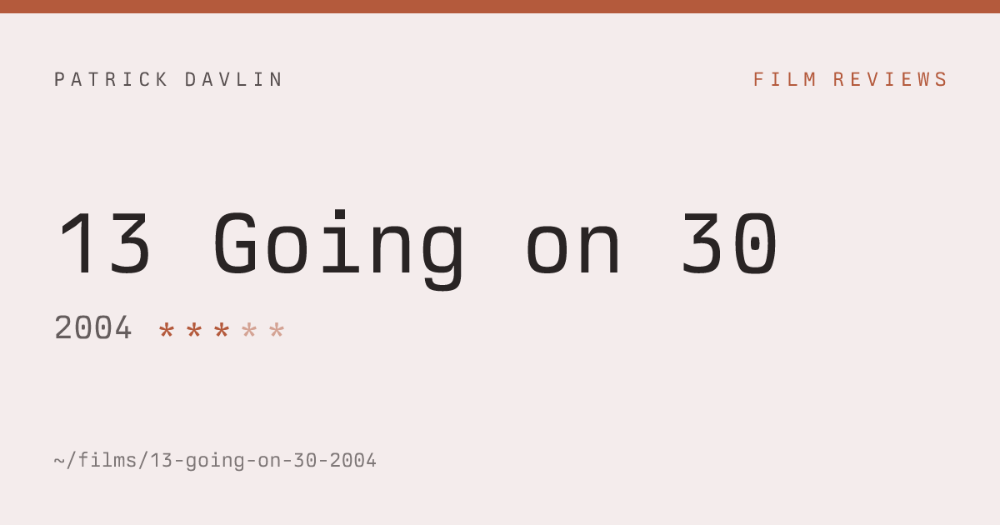
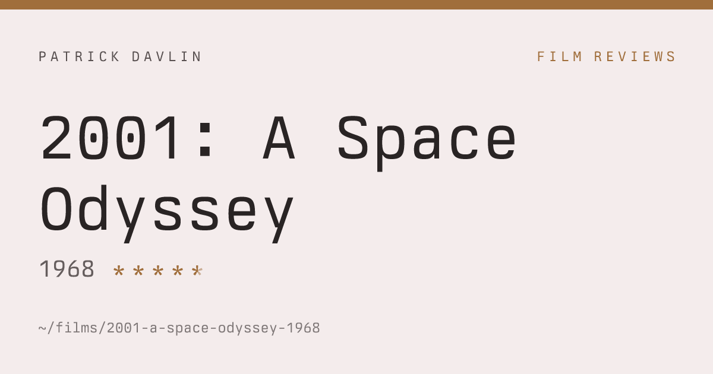
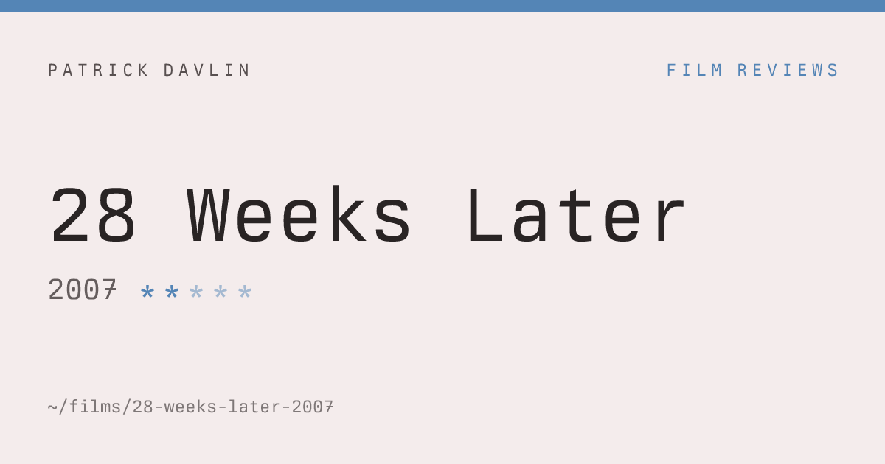
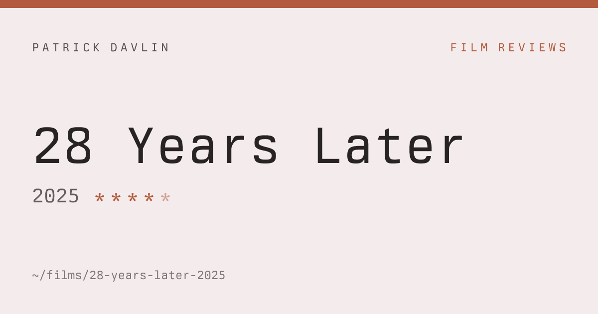
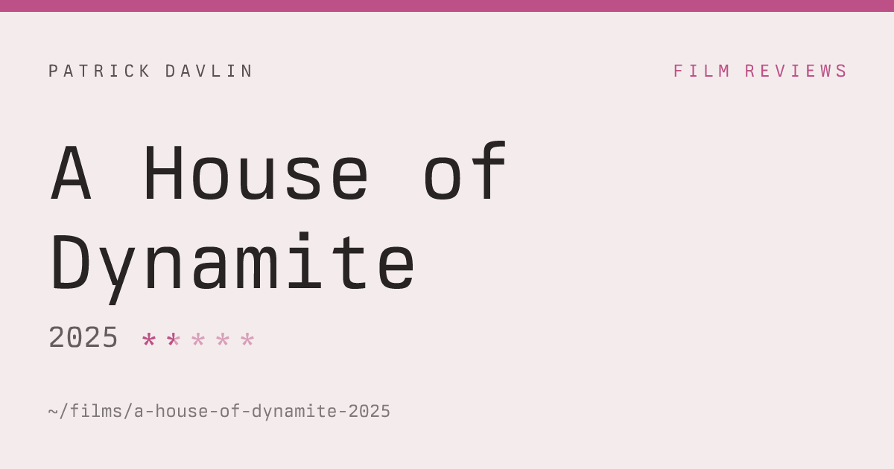
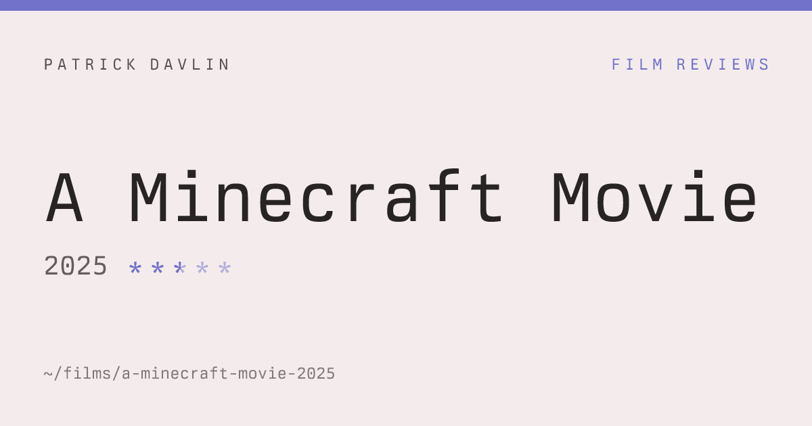
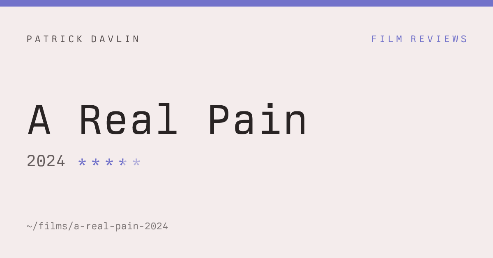
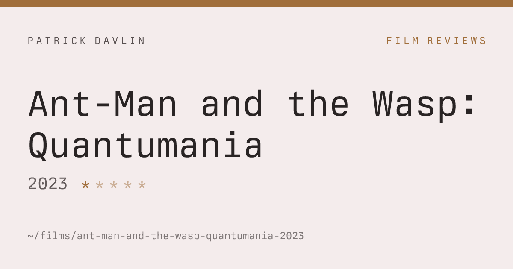
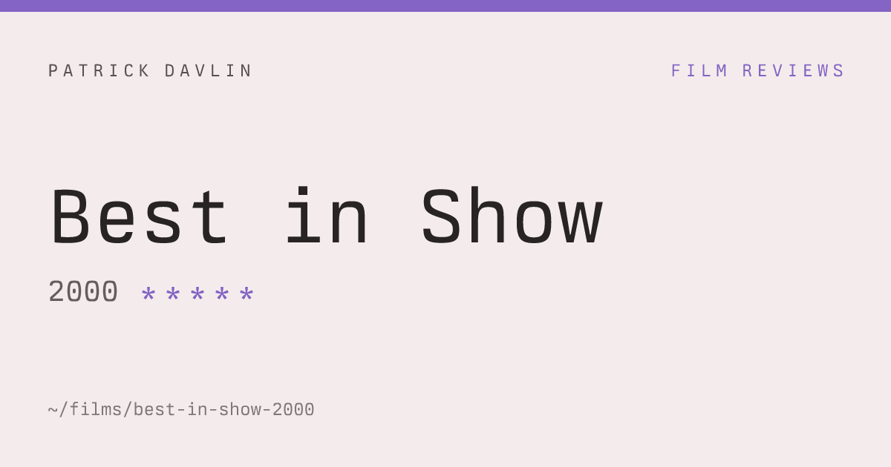
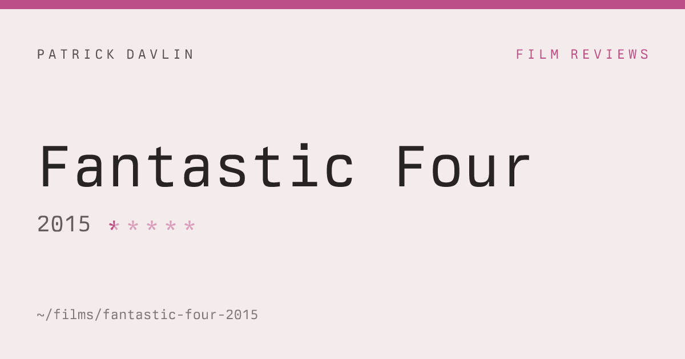

Light editorial + filepath footer (design locked 2026-09-10). Each card is a real film from the collection representing one of the 10 possible ratings (0.5 → 5.0). Half stars render as left-solid / right-dim; empty slots dim.









